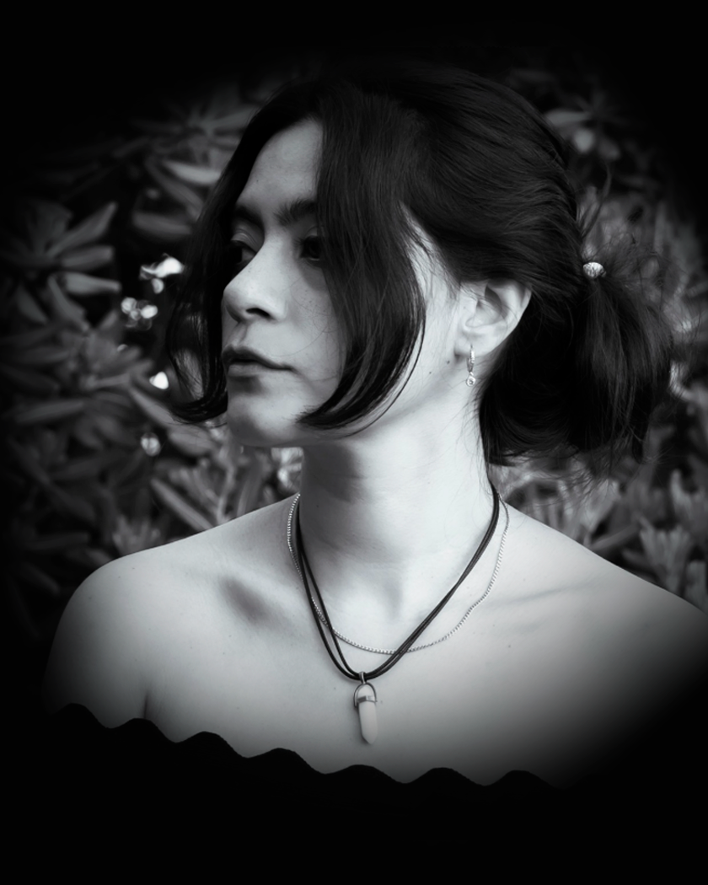
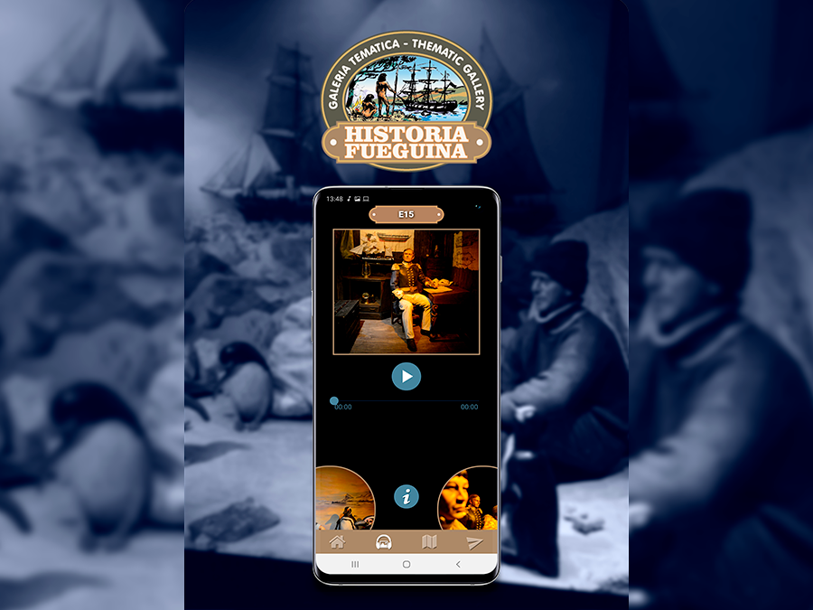
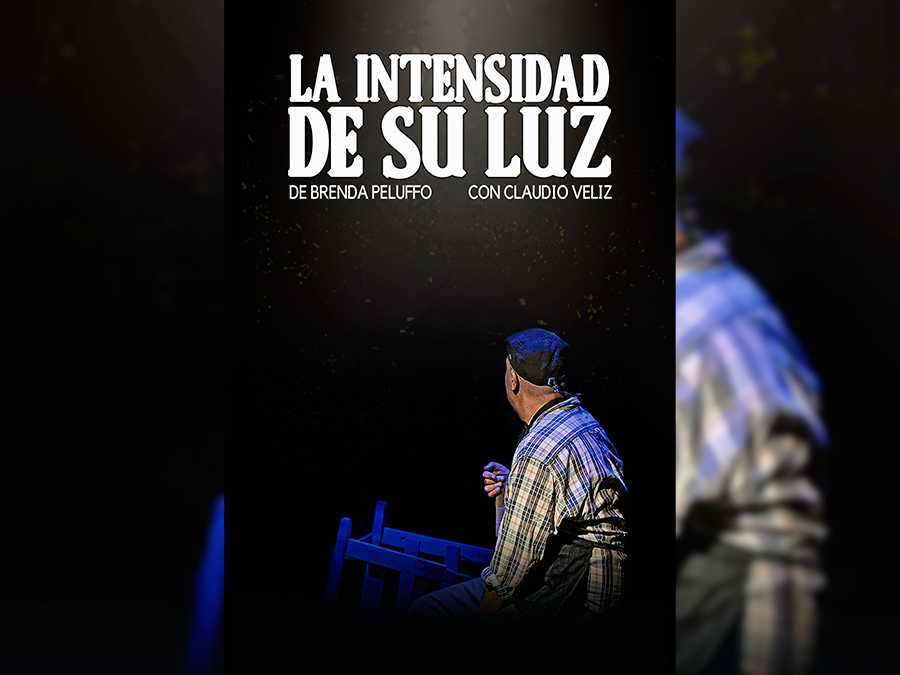
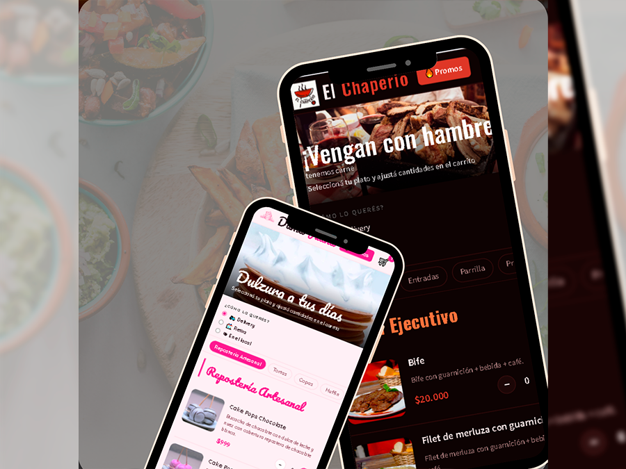
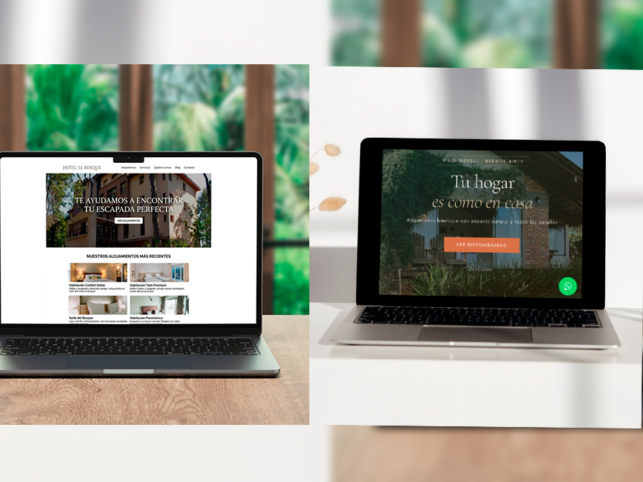
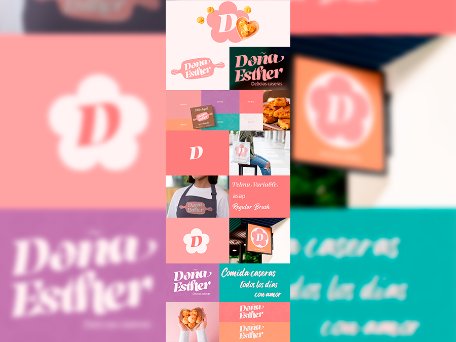
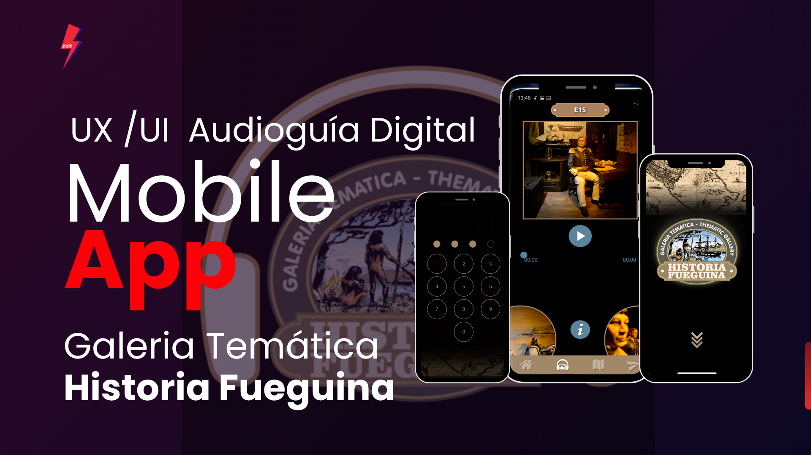
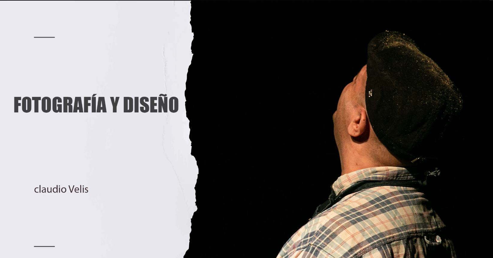
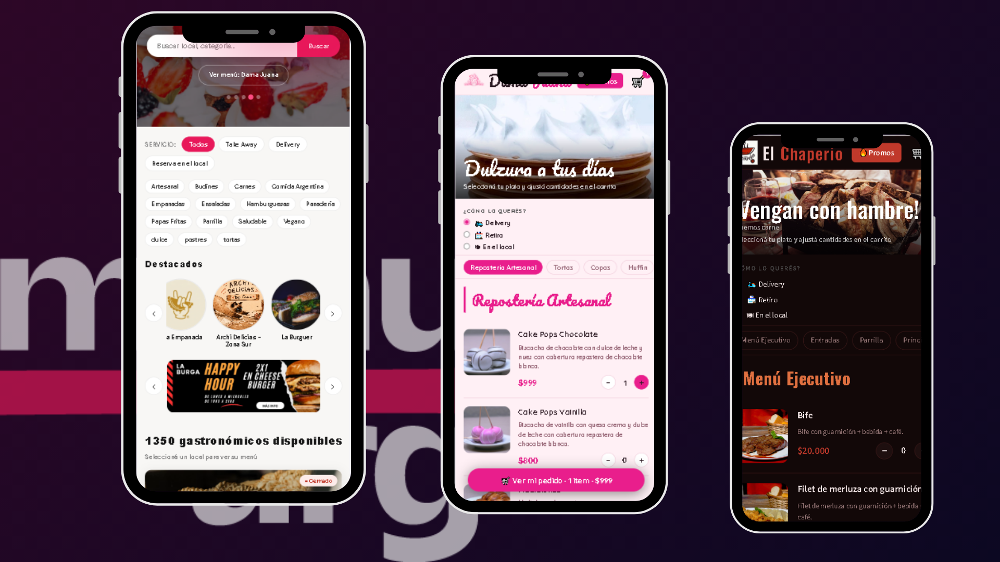
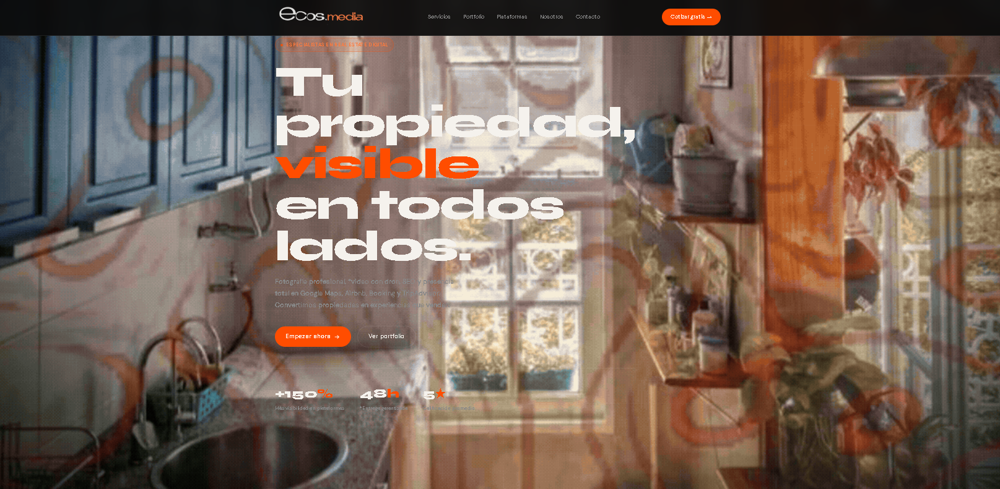

UI/UX & Dirección de Arte

Sobre mí
Soy diseñadora UI/UX y a vececes directora de arte. Productota Digital de la UNQ especializada en construir experiencias digitales y sistemas de identidad visual. Combino diseño, fotografía y desarrollo para llevar cada proyecto de la idea al resultado final.
Trabajé en proyectos que abarcan turismo, gastronomía, real estate y cultura, siempre buscando una solución visual clara y funcional y acorde sus presupuestos.
Portfolio

Galería temática UI/UX

Identidad, fotografía y diseño para obra de teatro

MenuArg

Ecos.Media

Branding
Municipalidad de Ushuaia

Diseño UI/UX y estrategia de comunicación omnicanal para la audioguía del museo. Creación de la app móvil, sistema de navegación y cartelería física para maximizar la adopción de los visitantes.
Ver caso completoIdentidad, Fotografía y diseño para obra de teatro

Diseño de identidad visual, fotografía y piezas de difusión para la obra teatral "La Intensidad de su Luz". Un trabajo de composición libre enfocado en capturar la atmósfera campestre y la puesta en escena, integrando la paleta cromática de la escenografía en la folletería, afiches y material editorial.
Ver caso completoUI/UX & founder

Creación de una solución web autónoma construida desde cero sin frameworks (Vanilla PHP/CSS/HTML). Diseñé la experiencia para dos perfiles de usuario: un buscador intuitivo basado en geolocalización para clientes, y un sistema de gestión de menús con optimización SEO para que los emprendedores aumenten su visibilidad orgánica.
Ver caso completoEcos Media

Concepción, diseño UI/UX y desarrollo web integral asistido por IA (HTML, CSS). Diseñé una arquitectura orientada a la conversión dividida en dos verticales: servicios para hoteles y para clientes particulares. Incorporé optimización SEO y geolocalización (GEO) para posicionamiento en Google, integración de reservas directas a WhatsApp y analítica avanzada con Google Analytics para medir métricas clave.
Ver caso completoBranding & Identidad Visual Gastronómica
Desarrollo integral de marca desde cero para un emprendimiento de comidas caseras. Diseñé el logotipo, la paleta cromática, el sistema tipográfico y un manual de marca simplificado. Creé un universo visual cálido y acogedor que cobra vida en múltiples aplicaciones: packaging, indumentaria (delantales), merch (tote bags), cartelería comercial y comunicación digital.
Ver caso completo